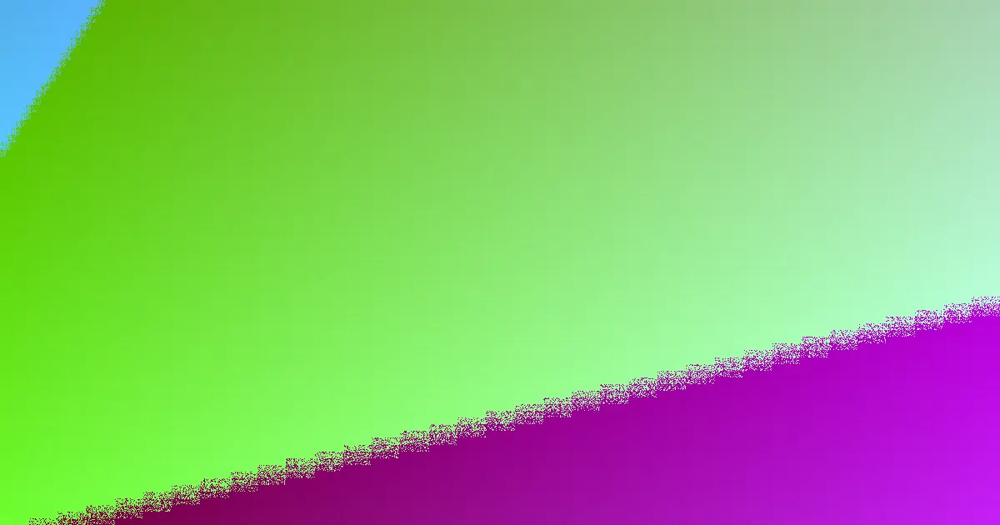

Retaining wall warranties on the Gold Coast are influenced by factors like wall height, soil conditions, drainage, and council approval requirements. Costs typically range from $250 to $800 per square metre, with timber generally being less expensive than concrete, block, or stone. Ensuring fixed-price quotes that detail engineering and drainage is crucial for homeowners.
For local buyers, retaining walls gold coast warranty understanding the warranty implications for your specific project.
Retaining Walls Gold Coast Warranty Explained
When planning a retaining wall on the Gold Coast, the primary considerations revolve around the site's specific needs rather than just the aesthetic of the product. Factors such as the wall's intended purpose, its height, the effectiveness of drainage, and the likelihood of requiring engineering or council approval are paramount. This approach ensures that the chosen solution is practical for homeowners, addressing the unique challenges presented by different site conditions, from low garden edges to boundary walls supporting significant loads.
The available options, as outlined by local specialists, include concrete sleeper walls, timber sleeper walls, besser block walls, rock and boulder walls, gabion walls, dedicated drainage systems, and engineered solutions for repairs and replacements. These are best viewed as distinct project pathways, each suited to different requirements, rather than simply stylistic choices. A comprehensive enquiry should detail the wall's length and height, any visible signs of distress like cracking or bulging, site access limitations, soil and water management issues, and the proximity of other structures.
Material Choice and Site Suitability
Concrete sleeper retaining walls are a popular engineered choice for Gold Coast properties, offering durability through steel reinforcement and galvanised posts, suitable for both coastal and hinterland environments. For garden applications, terraces, or lower boundary retaining, timber sleeper walls provide a more traditional aesthetic. Besser block walls are recommended for taller structures requiring engineered support and can be rendered for a finished look, while rock, boulder, and gabion walls offer robust, free-draining solutions often favoured for their natural appearance and suitability for sloping sites.
The selection of materials should be guided by a practical assessment of the wall's height, the desired finish, the available space for excavation, the necessary drainage strategy, and any regulatory requirements. For instance, a rendered block wall might be ideal for a prominent facade, whereas a sleeper wall could be more appropriate for a side garden where budget and ease of access are key considerations. Gabion and rock wall systems require adequate space for their structural footprint and intended batter angle.
The Importance of Drainage in Quotes
Effective drainage is a critical structural component for any retaining wall, preventing water buildup that can lead to failure. Specialists typically include agi-drain pipes, gravel backfill, and geofabric as standard behind walls. It is essential that these drainage details are explicitly included in the written scope of work, rather than being a vague allowance. Proper water management influences the entire wall system, including excavation requirements, backfill materials, and the approach to repairs.
Homeowners should inquire about the specific drainage provisions, including how collected water will be discharged and whether site access constraints might affect the drainage design. For failing walls, understanding whether a repair is feasible or if a full replacement is more practical is also important. A quote that clearly itemises drainage components allows for more accurate comparisons and ensures that the wall is designed to withstand the site's specific soil and water conditions.
Navigating Approval and Engineering
Gold Coast City Council generally mandates building approval for retaining walls unless they meet specific criteria: being under 1.0 metre in height, situated more than 1.5 metres from any building or another retaining wall, and complying with other stated conditions. For walls exceeding 1 metre in height or supporting additional loads (surcharges), design certification to AS 4678, often involving an RPEQ Form 15, and council approval are typically required.
Homeowners should not assume compliance based on visual inspection alone. When requesting quotes, it is advisable to ask contractors to identify any potential approval triggers, confirm whether engineering design is included, and ensure that all associated approval costs are clearly itemised. If a wall is supporting a driveway, building, adjacent ground, fence, or another wall, it is crucial to understand how the contractor has accounted for these loads in their design and pricing.
- Describe the Wall. Record the approximate height, length, location on the block, and what ground or structure it retains. Take clear photos of access, drainage outlets, nearby buildings, fences, cracks, bulging, and both ends of the wall.
- Ask About Approval. Request written advice on whether height, surcharge, nearby structures, or neighbouring walls create an approval or engineering trigger. Confirm if engineering design and council approval costs are included in the quote.
- Compare Scope. Check that the quote clearly names all materials, excavation, drainage, backfill, engineering, approval costs, and any exclusions. Ensure drainage details are specific, not vague allowances.
- Confirm Next Steps. Use the written quote to decide if the project is ready for booking, requires further design input, or needs a repair assessment before proceeding.
| Material | Typical Use | Considerations |
|---|---|---|
| Concrete Sleepers | Engineered, coastal/hinterland | Durable, steel-reinforced, requires posts |
| Timber Sleepers | Gardens, low boundary walls | Aesthetic, suitable for lower heights |
| Besser Block | Taller engineered walls, rendered finishes | Requires core filling, steel reinforcement, council approval often needed |
| Rock & Boulder | Natural, free-draining, sloping sites | Requires space for batter, aesthetic focus |
| Gabion | Free-draining, erosion-prone sites | Rock-filled baskets, requires adequate footprint |
Common questions
How much does a retaining wall typically cost on the Gold Coast? On the Gold Coast, retaining walls generally range from approximately $250 to $800 per square metre. This cost varies based on the material used, wall height, site accessibility, and whether specialised engineering is required. Timber sleeper walls are usually at the lower end of this spectrum, while concrete, block, and stone walls tend to be higher due to material and labour costs. These estimates typically include materials and labour but may not cover council approvals or complex excavation.
When is council approval needed for a retaining wall in Gold Coast City? Gold Coast City Council generally requires building approval for retaining walls unless the wall is under 1.0 metre high, situated more than 1.5 metres away from any building or another retaining wall, and meets other specified conditions. Walls over 1 metre high or supporting additional loads (surcharges) will typically require design certification and council approval.
Retaining wall warranty considerations for Gold Coast homeowners.